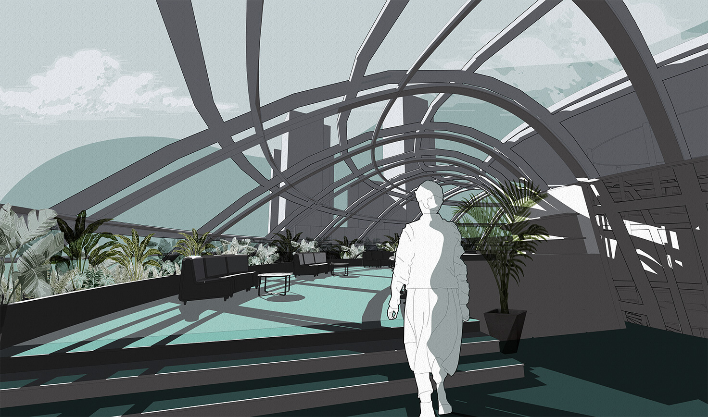
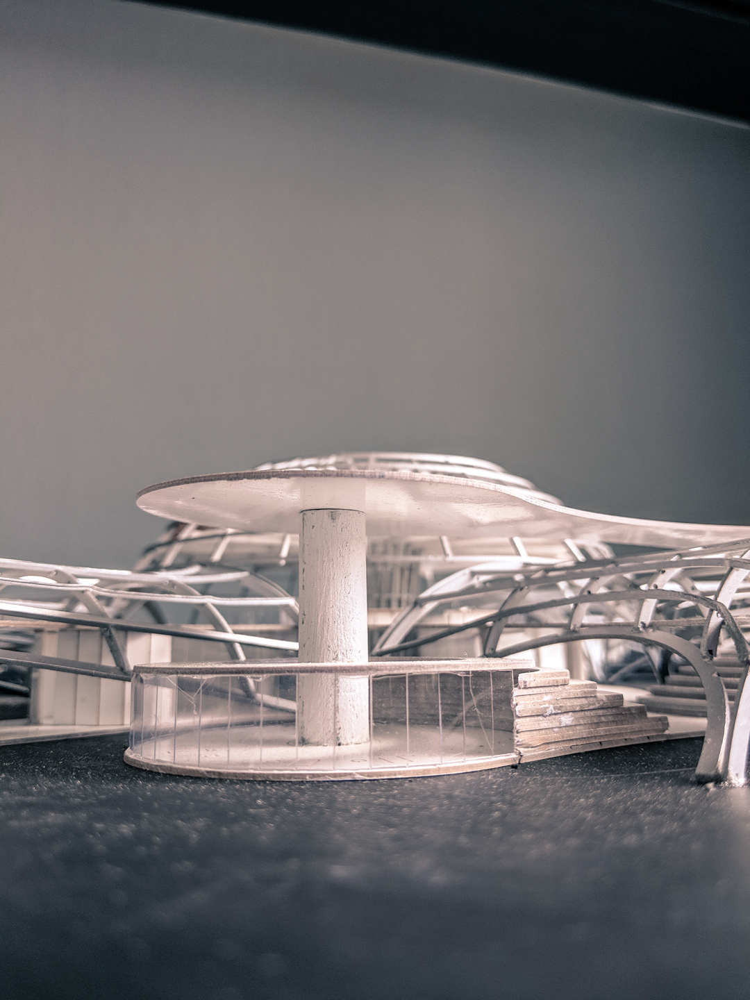

This project envisions the design of an experimental typology in Singapore - a bicycle hub along a busy street intersection on North Buona Vista Rd and Commonwealth Ave.
Cycling in Singapore is not as popular in bike-integrated cities like Amsterdam or Taipei, but it can be best described as a tale of two cultures.
Cycling in Singapore is not as popular in bike-integrated cities like Amsterdam or Taipei, but it can be best described as a tale of two cultures.
On one hand, you have fast enthusiast cyclists who prioritise speed and efficacy, a spectral alternative slipping through the chaos and cracks of the rush hour. On the other, slower cyclists meander through park connector networks, taking in the sights. A handful of rare brave souls join their ranks, running the occasional errand under the sweltering Singapore sun.
Following a qualitative study of both types of cyclists, I theorised that the speed and posture they assumed on their bicycles created heavily divergent perceptions of space for each group.
Following a qualitative study of both types of cyclists, I theorised that the speed and posture they assumed on their bicycles created heavily divergent perceptions of space for each group.
The Slow cyclists sat upright. Hands gently placed on pulled back handle bars. they engaged in a satellite orbital vision. Each passing event is observed, documented, and understood as connected nodes. They pass through space and time, point by point in a regulated staccato.
The fast cyclists leaned forward heavily, pedalled fast engaging in a strict tunnel vision within a 20 - 55 deg vision cone. Buildings de-materialise, slowly disappearing in a blur as you settle into the rhythm of clicking pedals, re-emerging only at traffic stops. A sensory assault.
The fast cyclists leaned forward heavily, pedalled fast engaging in a strict tunnel vision within a 20 - 55 deg vision cone. Buildings de-materialise, slowly disappearing in a blur as you settle into the rhythm of clicking pedals, re-emerging only at traffic stops. A sensory assault.



